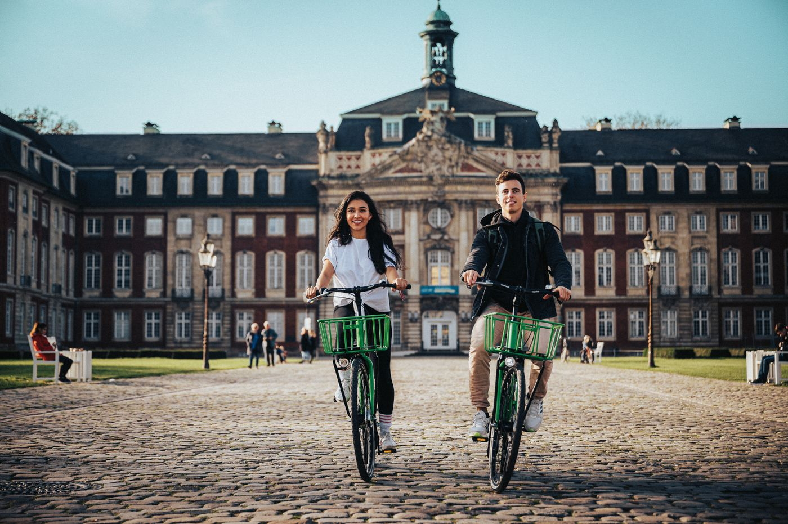

mbo
Je leert een vak in de praktijk
Veel praktijk en stage. Je wordt opgeleid voor een beroep. Duur: 1 tot 4 jaar. Met een mbo-4-diploma (de hoogste mbo-stap) kun je ook doorstromen naar het hbo.
ruim 1.100 opleidingen · in gewone taal · voor leerlingen én ouders
Ontdek wat bij je past, wat een studie écht is (ook als hij een Engelse naam heeft) en hoe je er komt: van je eerste idee tot je eerste studiedag. Voor jou, en voor iedereen die met je meedenkt.
De Padvinder duurt ongeveer 5 minuten. Ook voor ouders.
Kies zelf. Weet je niet waar te beginnen? Ga dan van links naar rechts: eerst ontdekken wat bij je past, dan de opleidingen bekijken, en daarna kiezen en regelen.
Geen account nodig: je browser onthoudt waar je gebleven bent. Werk dus op hetzelfde apparaat, bijvoorbeeld je schoollaptop.
Top. Dan sla je de Padvinder, de sterren en de metro gewoon over. Dit is de snelle route: zo zorg je dat je er ook echt komt.
Typ de naam in het zoekveld bovenaan, open de opleiding en klik op “+ Zet op mijn lijst”. Dan rekent je stappenplan met jouw opleiding. Naar de opleidingen →
Heb je de juiste vooropleiding, het juiste profiel en de vakken die nodig zijn? Vul je profiel in, dan zie je het bij elke opleiding meteen. Mijn profiel →
Dan meld je je al vóór 15 januari aan via Studielink, niet pas in mei. Wie dit mist, moet een jaar wachten. Toelating uitgelegd →
Dezelfde opleiding is op elke school anders: meer praktijk, andere stad, andere sfeer. Een meeloopdag laat zien waar jij je thuis voelt. Open dagen en meeloopdagen →
Voor hbo en wo via Studielink, met DigiD. Voor het mbo bij de school zelf. Op tijd aangemeld betekent: in principe toegelaten als je aan de eisen voldoet.
Doe de studiekeuzecheck, regel studiefinanciering bij DUO en begin vroeg met kamers zoeken als je gaat verhuizen. Wie betaalt wat? →
Jij kunt het allang weten, maar je ouders denken daar misschien heel anders over. Dat hoeft geen ruzie te worden. Meestal maken ze zich zorgen, en daar kun je iets mee.
Ouder en lees je mee? Zo voer je het gesprek →
De leerling doet de Padvinder, een ouder ook, over het kind. Hier zie je in één oogopslag waar jullie hetzelfde zien, en waar jullie het over kunnen hebben.
Geen begin en geen eind. In het midden sta jij, daaromheen alles wat je kunt worden. Klik, sleep en zoom.
Elke schoolsoort is een metrolijn. Kies waar je nu zit, dan zie je welke routes jij kunt nemen. Geen enkele route loopt dood.
station: een diploma of opleidingdoorstromen: verder naar een andere schoolsoortlater nog leren
Een knipoog naar wat je vroeger wilde worden. Klik op een kaart: wat heb je ervoor nodig, en welke banen zijn er nog meer in dat vak?
Deze mensen kennen we niet persoonlijk; ze staan hier als voorbeeld.
Wat anderen een minpunt noemen, is soms precies wat een beroep nodig heeft. Kies wat jij vaak hoort.
Een persoonlijk plan van nu tot je eerste studiedag, met jouw eigen data. Je kunt het helemaal zelf doen: deze site loopt alle stappen met je langs. Wat je invult, blijft alleen op dit apparaat.
Je hebt geen account nodig. Wat je invult, blijft in deze browser staan, ook als je de site sluit. Wij zien het niet. Werk daarom steeds op hetzelfde apparaat, het liefst de laptop of computer die je ook voor school gebruikt. Op een ander apparaat of na het wissen van je browsergegevens ben je het kwijt. Bewaar het daarom ook als bestand: dat kun je op een ander apparaat terugzetten.
Vul in waar je nu staat. Dan zie je bij elke opleiding of je profiel en vakken passen, en klopt je stappenplan beter.
Anoniem en alleen op dit apparaat. Je naam is niet nodig en er is geen account. Wat je kiest, blijft in deze browser staan en gaat niet naar internet. Tip: werk daarom op je schoollaptop, zodat alles wat met school te maken heeft bij elkaar staat.
Van profielkeuze tot je eerste studiedag: dit moet je wanneer doen en regelen. Data kunnen per opleiding verschillen, dus check altijd de opleiding zelf.
Eerst meld je je aan, dan word je toegelaten, en tot slot schrijf je je definitief in. Bij de toelating kan van alles horen.
Studeren kost geld. Dit zijn de kosten en wie ze meestal betaalt. Bedragen veranderen, dus kijk voor de actuele bedragen op duo.nl.
Het kan gebeuren: uitgeloot, niet geselecteerd of het eerste jaar valt tegen. Dat is geen eindpunt. Kies wat er bij jou speelt.
Er is niet één goede route. Dit zijn de andere mogelijkheden.
Op open dagen en websites zie je vooral de leuke kant. Dat is logisch, want scholen willen dat je komt. Stel jezelf daarom ook de lastige vragen. Het doel is niet om je af te schrikken. Als je na deze vragen nog steeds wilt, weet je beter waarvoor je kiest.
Twijfel betekent niet dat je het niet moet doen. Het betekent dat je nog iets moet uitzoeken. Kijk ook naar Plan B →
Er zijn drie hoofdpaden. Welk pad je kunt nemen hangt af van je school nu, maar geen enkel pad is doodlopend. Je kunt vaak doorstromen naar een andere route. Bekijk het op de metrokaart →
Je leert een vak in de praktijk
Veel praktijk en stage. Je wordt opgeleid voor een beroep. Duur: 1 tot 4 jaar. Met een mbo-4-diploma (de hoogste mbo-stap) kun je ook doorstromen naar het hbo.
Je leert een beroep met veel denkwerk
Op een hogeschool. Een mix van theorie en praktijk, met projecten en stages. Duur: 4 jaar (bachelor).
Je leert onderzoeken en redeneren
Op een universiteit. Meer theorie, onderzoek en zelfstandig werken. Duur: 3 jaar bachelor, daarna vaak een master van 1 of 2 jaar.
Voor wie geen vmbo-diploma heeft. Ongeveer 1 jaar. Je wordt assistent en kunt daarna door naar niveau 2.
Met een vmbo-diploma. 1 tot 2 jaar. Je leert een vak, bijvoorbeeld kok, verkoper of monteur.
2 tot 3 jaar. Je werkt zelfstandig in je vak, bijvoorbeeld als verzorgende of eerste monteur.
3 tot 4 jaar. Je wordt specialist of leidinggevende. Met een mbo-4-diploma kun je ook naar het hbo.
Bij bol (beroepsopleidende leerweg) ga je naar school en loop je stage. Bij bbl (beroepsbegeleidende leerweg) werk je een paar dagen per week bij een bedrijf en ga je één dag naar school. Je verdient dan al geld.
Van niveau 2 naar 3 of 4, van mbo-4 naar het hbo, en na je eerste hbo-jaar eventueel naar de universiteit. Geen enkele route is doodlopend.
Je hoeft niet te kiezen tussen een diploma halen en geld verdienen. Op het mbo, het hbo en de universiteit kun je werken en leren combineren. Het heet alleen overal anders, en het is niet overal even makkelijk.
Bbl: werken en één dag naar school
Je werkt 3 à 4 dagen bij een leerbedrijf en krijgt salaris. Je haalt hetzelfde diploma als bij bol. Kan bij heel veel mbo-opleidingen.
Je hebt nodig: een leerbaan bij een erkend leerbedrijf.
Duaal of deeltijd
Duaal: je hebt een baan die bij je studie past, en werk en studie wisselen elkaar af. Je verdient salaris. Meestal krijg je ook studiefinanciering, net als bij voltijd.
Deeltijd: je studeert naast je baan, vaak 's avonds of één dag per week. Je werk hoeft niet bij je studie te passen. Studiefinanciering krijg je niet, maar je kunt bij DUO wel geld lenen voor je collegegeld (het levenlanglerenkrediet).
Een Associate degree (Ad, 2 jaar hbo) kun je vaak duaal of in deeltijd doen.
Minder vaak, maar het kan
De meeste universitaire opleidingen zijn voltijd. Een deel van de universiteiten heeft een deeltijdvariant, bijvoorbeeld bij rechten, bedrijfskunde, informatica of een taal. Duaal is op de universiteit zeldzaam.
De Open Universiteit is helemaal gemaakt om naast je werk te studeren: online en in je eigen tempo. Voor een bachelor heb je daar geen diploma nodig, alleen een leeftijd van 18 jaar of ouder.
Ook een route: na je bachelor eerst gaan werken, en later een master in deeltijd doen.
Naar de Open Universiteit →Op het mbo kies je niet alleen een opleiding, maar ook hoe je hem volgt. Veel opleidingen kun je op twee manieren doen, en je krijgt hetzelfde diploma.
Bol
Bbl
Klik een paar zinnen aan.
Dat gevoel is heel normaal, zeker na jaren in de schoolbanken. Maar meteen helemaal stoppen mag niet altijd. Zo zit het:
Waarom die startkwalificatie? Met een diploma heb je meer kans op vast werk en een beter loon, en kun je later makkelijker verder leren. Lees meer bij de Rijksoverheid →
Welk vak vind jij leuk? Kies het hieronder. Je ziet wat je er waarschijnlijk écht leuk aan vindt, welke beroepen erbij passen en in welke opleidingen het terugkomt.
Deze vakken had je nooit, maar ze kunnen wel goed bij je passen.
Drie delen: waar word je blij van (interesses), waar ben je goed in (kwaliteiten) en wat voor jou telt in je werk (je waarden). Eén vraag tegelijk, ongeveer 5 minuten. Geen goede of foute antwoorden en het is geen vonnis. Je krijgt een richting, geen beslissing. Ouders kunnen de test ook zelf invullen, over hun kind.
Geen account nodig: je browser onthoudt waar je gebleven bent. Werk dus op hetzelfde apparaat, bijvoorbeeld je schoollaptop.
Studies hebben tegenwoordig flitsende namen. Klik op een kaartje en je ziet wat er echt achter zit.
Een selectie, uitgebreid uitgelegd in gewone taal. Klik op een studie voor de volledige uitleg. Je studie er niet bij? Alle opleidingen staan verderop →
Niets gevonden. Probeer een ander woord, of haal een filter weg.
Je komt binnen bij de hoofdingang onderaan. Op de campus staan zes faculteiten: zes soorten werk. Welk pad je ook neemt (mbo, hbo of wo), je kunt bij elke faculteit uitkomen. Klik op een faculteit om de opleidingen te zien, of start de Padvinder: dan licht jouw route op.
Alle 500+ erkende mbo-opleidingen, hbo- en wo-bachelors en associate degrees (tweejarige hbo-opleidingen) in Nederland, gesorteerd op soortgelijke opleidingen. Zo zie je dat “Business Administration” (bedrijfskunde), “Bedrijfskunde” en “Management” (leidinggeven en organiseren) vaak hetzelfde werkveld zijn. Het zoekveld bovenaan en de filters (mbo, hbo, wo) werken hier ook.
Niets gevonden in de volledige lijst.
Bron: DUO, Overzicht Erkenningen ho (RIO), en DUO, RIO (aangeboden mbo-opleidingen), open data, licentie CC BY. Peildatum 31-10-2026.

Eén dag rondlopen zegt meer dan tien websites. Hier staan de komende open dagen van hogescholen en universiteiten, rechtstreeks van hun eigen websites. Data kunnen veranderen, dus check altijd de site van de school.
Nog beter dan een open dag
Op een open dag krijg je presentaties. Op een meeloopdag doe je een dag echt mee: je zit in de lessen, werkt aan een opdracht en luncht met studenten. Dan merk je pas of het bij je past. Het is laagdrempelig: je hoeft niets te kunnen, niets voor te bereiden en niets te beslissen. Je komt alleen kennismaken.
Op een open dag zie je vooral de leuke kant. Stel ook de lastige vragen: over werk, geld, afstand en je eigen reden. Waarom zou je het misschien níet doen? →
Opgehaald op 31-10-2026 van de websites van de scholen zelf.
Studiekeuze zit vol moeilijke woorden. Hier staat wat ze betekenen, in gewone taal.
Dit woord staat er nog niet in. Vraag het aan je mentor of decaan.
Je hoeft geen antwoord te hebben. Goede vragen zijn vaak meer waard.
Doe de Padvinder ook zelf, over je kind. Dan zie je jullie antwoorden naast elkaar, met de vragen waar jullie het verst uit elkaar liggen. Samen vergelijken →
Dat gevoel mag er zijn. Je kent je kind lang en je wilt het beste. Maar een eerste reactie bepaalt vaak hoe het hele gesprek loopt. Zo houd je het open.
Zeg niet meteen wat je ervan vindt. Vraag wat je kind erin trekt en wat het er al over weet. Vaak zit er een reden achter die je nog niet kende.
Maak je zorg concreet: weinig werk, weinig geld, te ver weg, te zwaar? Of is het vooral niet wat jij voor je kind had bedacht? Dat laatste is jouw beeld, niet dat van je kind. Check je zorg samen op studiekeuze123.nl: hoeveel studenten stoppen en hoeveel er werk vinden. De lastige vragen →
Juist naar die opleiding die jou niets lijkt. Luister vooral, stel je praktische vragen over geld, stages en werk, en laat je kind het woord voeren. Vraag achteraf eerst wat je kind ervan vond, en pas daarna wat jij zag. Misschien blijkt je zorg terecht, misschien niet. Open dagen →
Doe de Padvinder over je kind. Dan zie je waar jullie hetzelfde zien en waar jullie verschillen, en heb je iets concreets om over te praten. Samen vergelijken →
Steun de keuze en help je kind om ook een tweede optie klaar te zetten. Dat geeft rust, zonder dat je de keuze overneemt. Plan B →
Wie zelf kiest, zet vaker door als het tegenzit. En valt het toch tegen, dan is overstappen geen ramp. Je kind leert er meer van dan van een studie die jij hebt gekozen.